Welcome to the Outlandish Imagery!
An exhibition by Angelique Gloria
Favorite


“We don't need to have just one favorite.
We keep adding favorites. Our favorite book
is always the book that speaks most directly
to us at a particular stage in our lives. And
our lives change. We have other favorites that
give us what we most need at that particular
time. But we never lose the old favorites.
They're always with us. We just sort of accumulate
them.”
― Lloyd Alexander
*
Categories
Movies
Trilogies
Musicians
Bands
Songs
Artist
Paintings
Celebrities
Foods
Movies
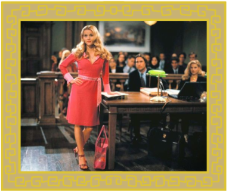 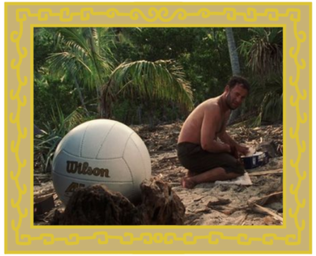
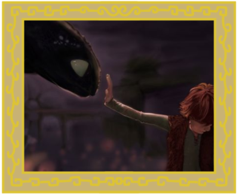
Back
Trilogies
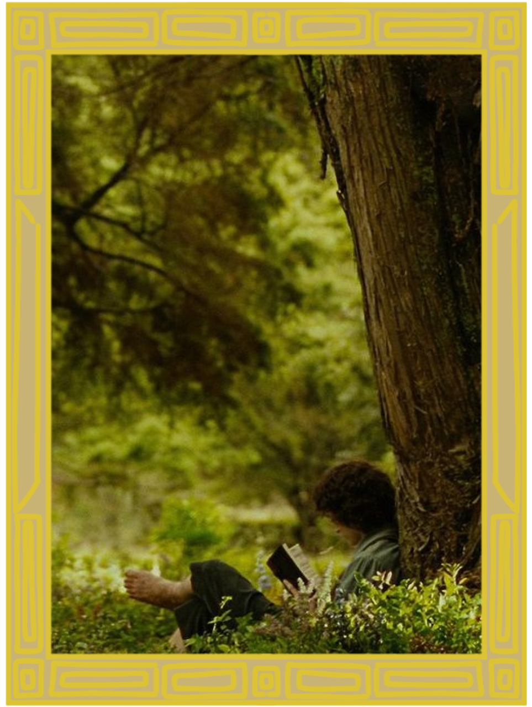
 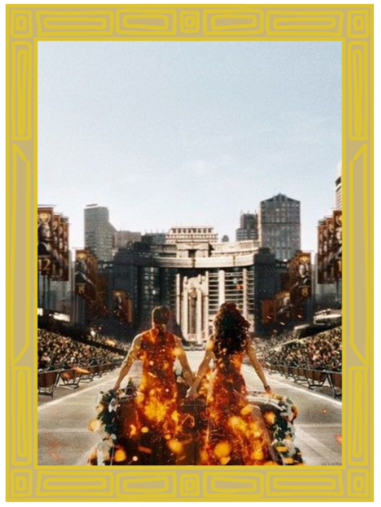
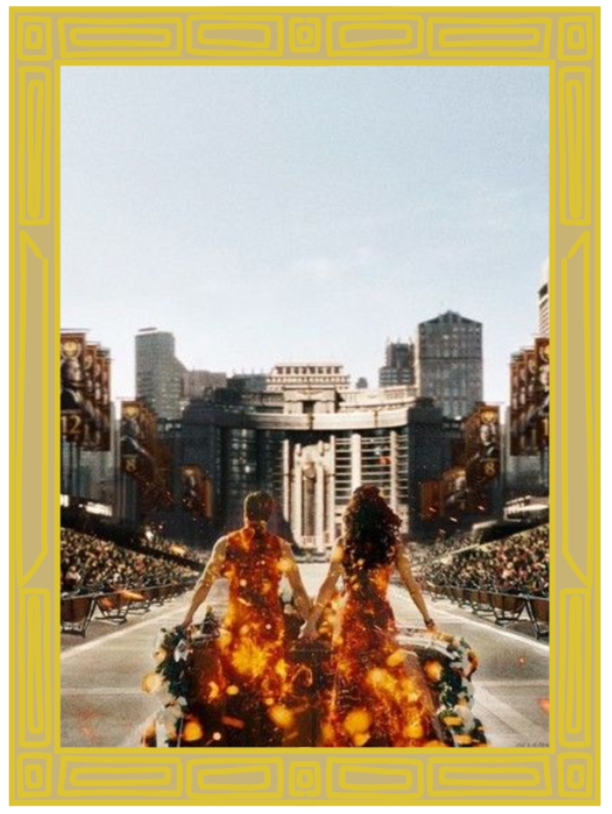
Back
Musicians
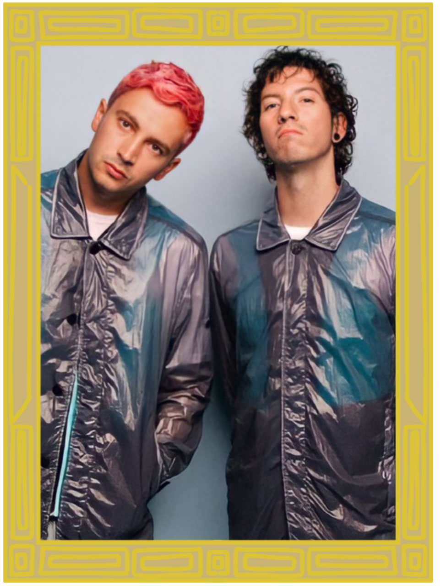 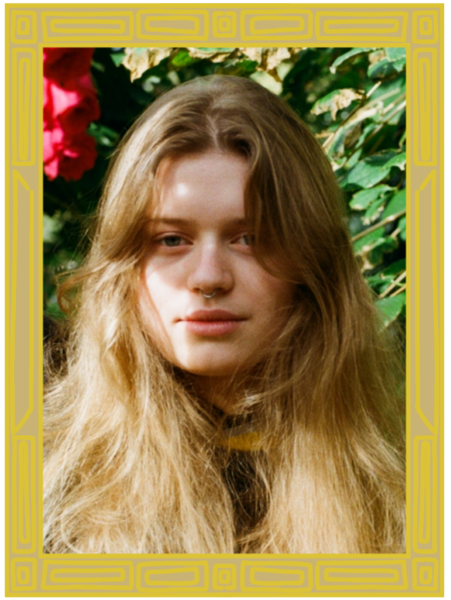 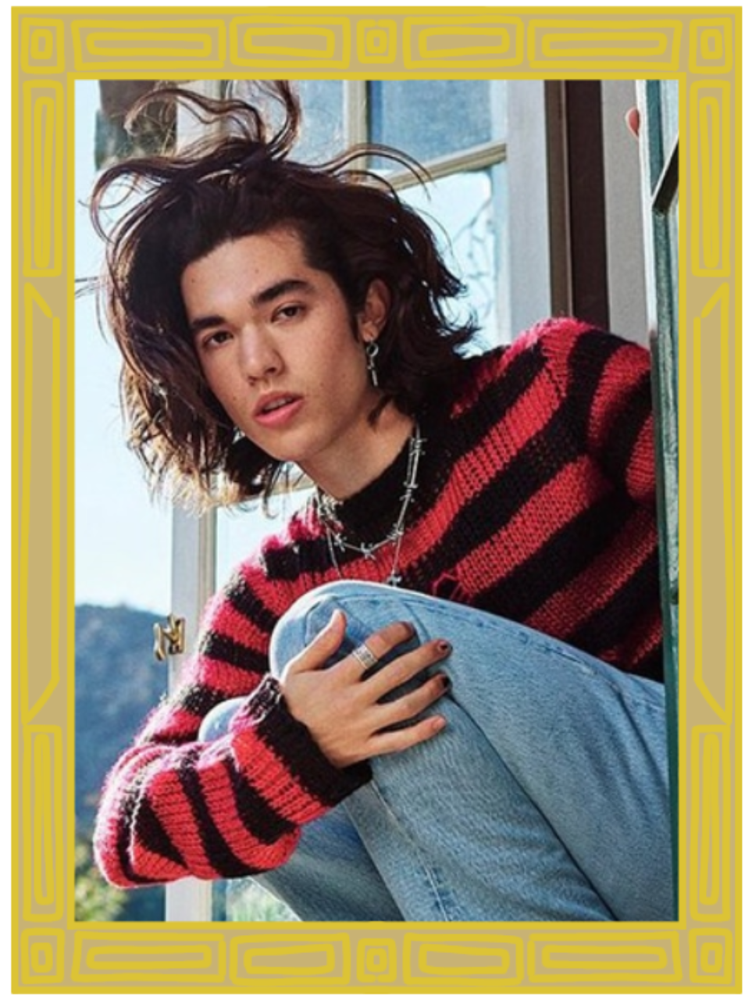
Back
Bands
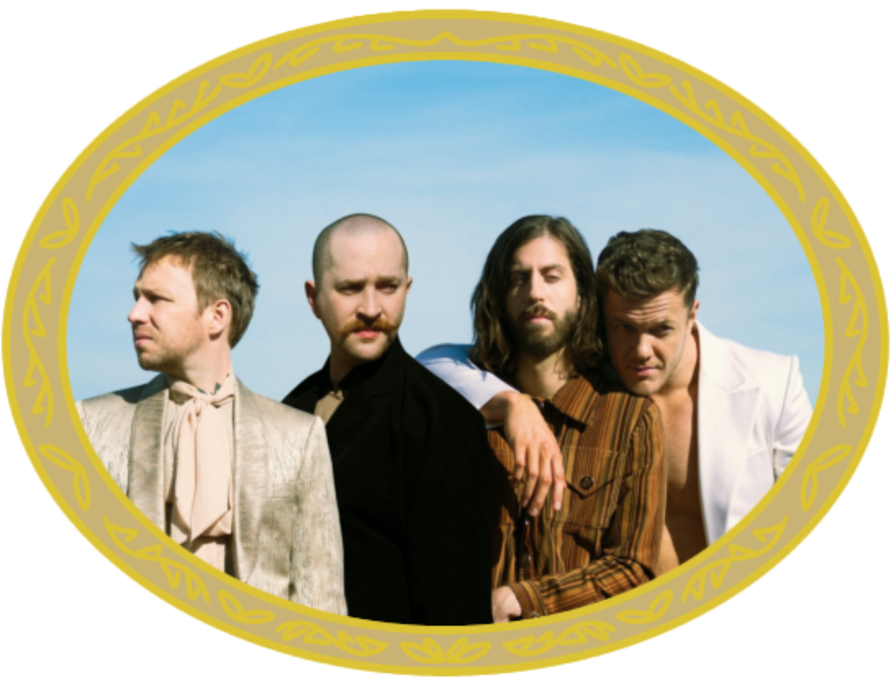
Back
Songs


Back
Artists
Back
Paintings
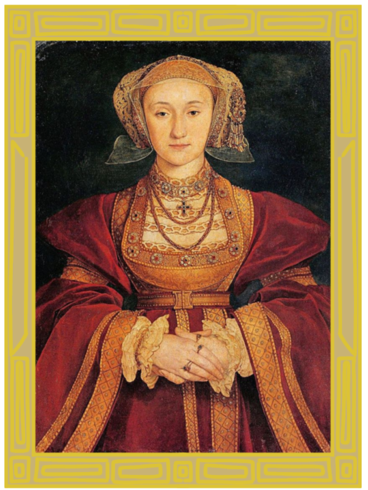 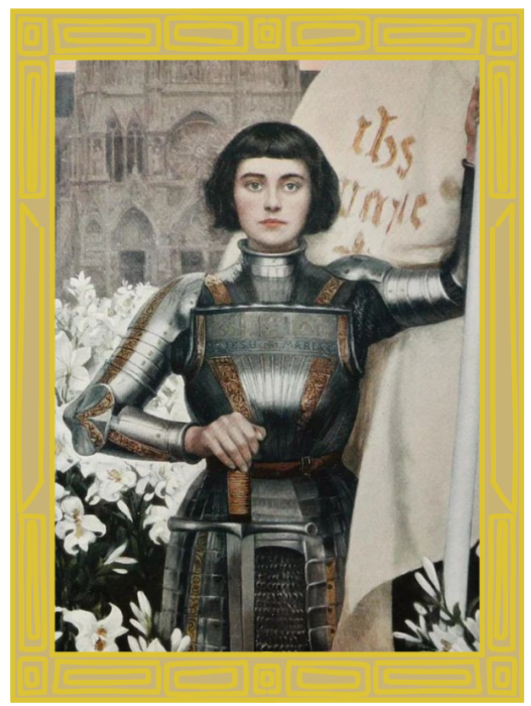
Back
Celebrities
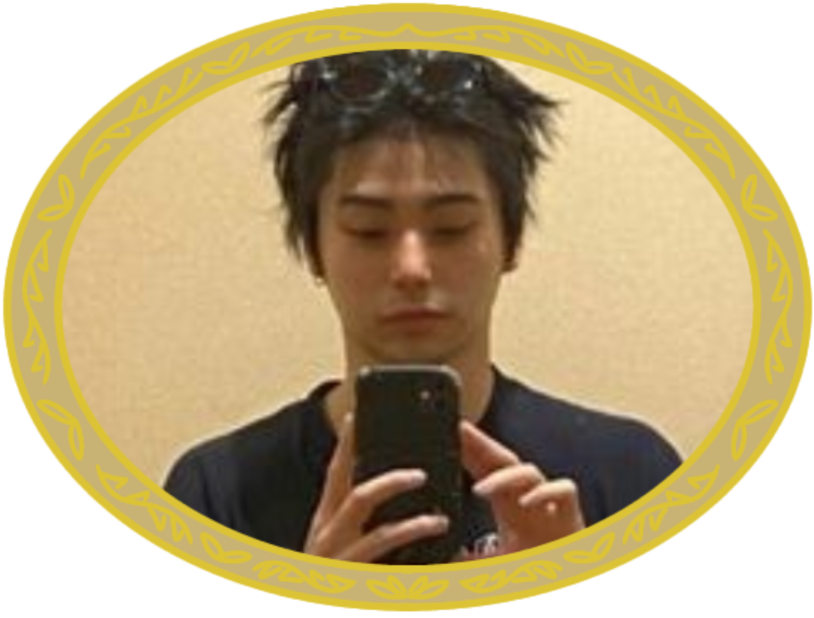

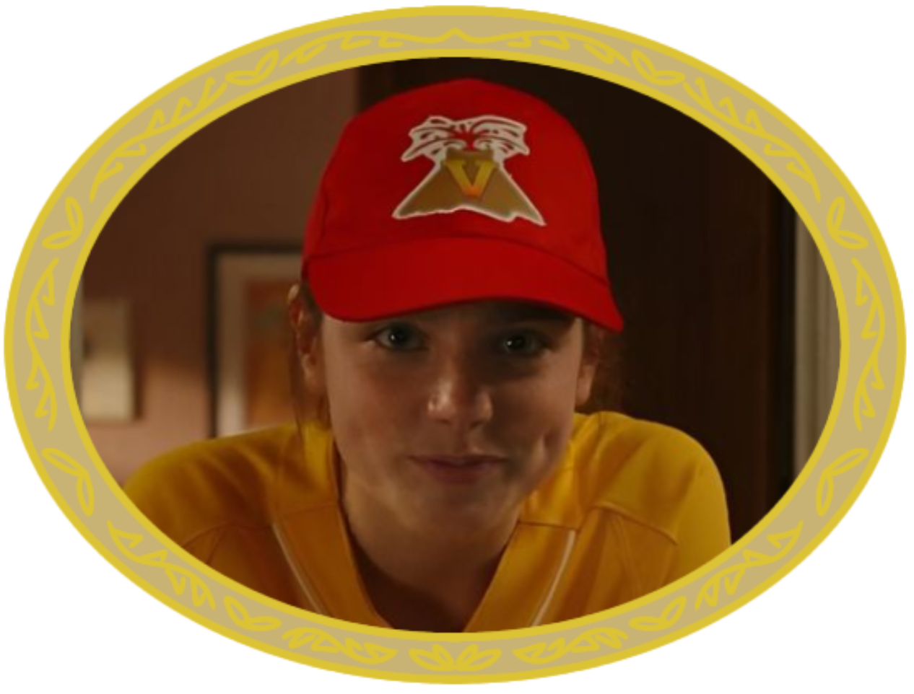
Back
Foods
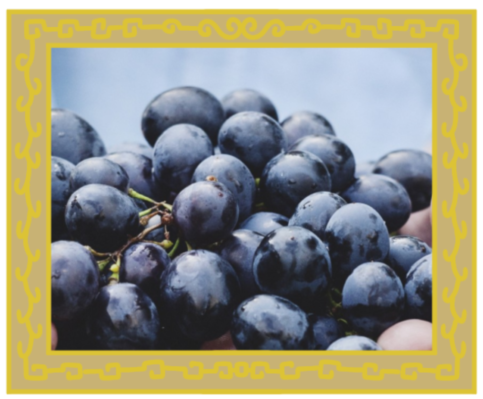
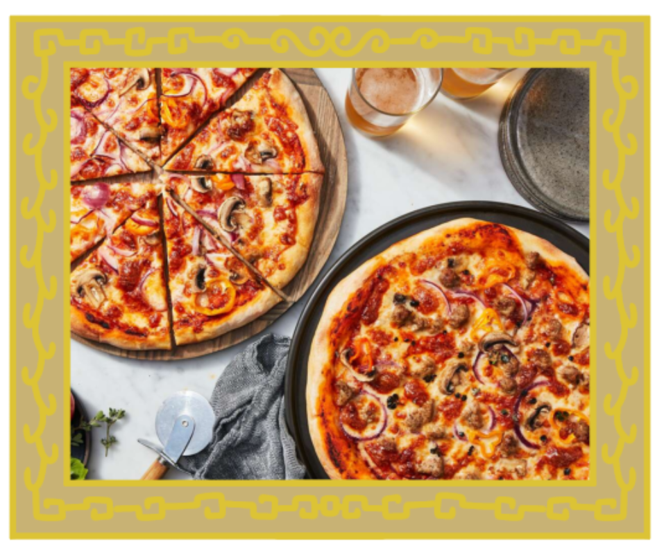